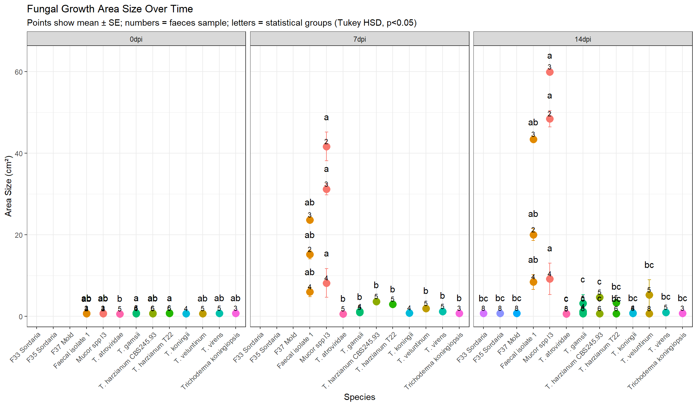
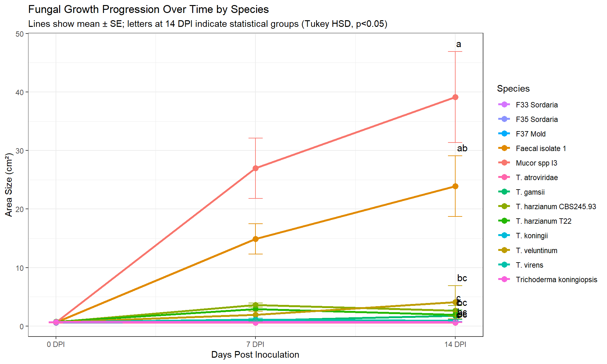
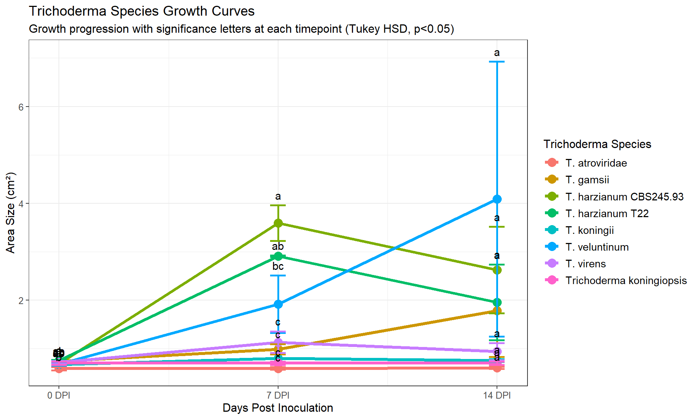
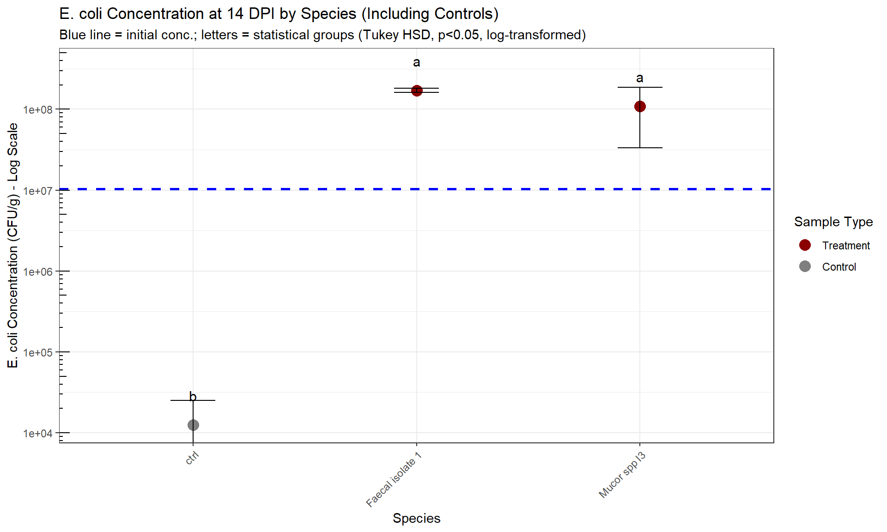
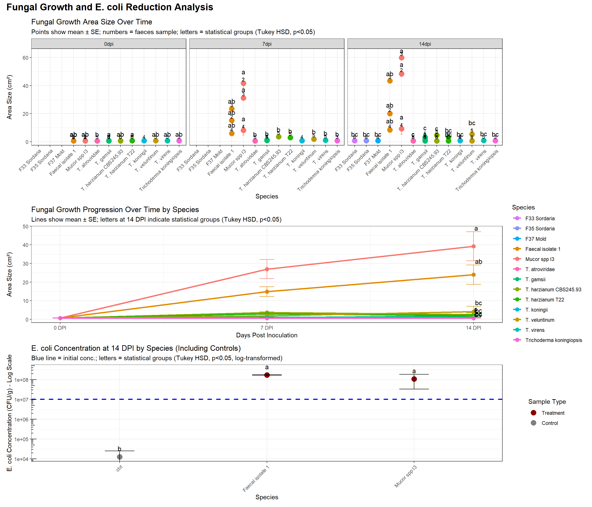

'data.frame': 118 obs. of 25 variables:
$ id_treatment : int 1 2 3 4 5 6 7 8 9 10 ...
$ id_inoc : int 1 1 1 2 3 4 4 4 6 7 ...
$ id_faeces : int 1 1 1 1 1 1 1 1 1 2 ...
$ starting_date : chr "2025-05-08" "2025-05-08" "2025-05-08" "2025-05-08" ...
$ weight_0dpi : num 25.7 27.1 26.4 23.9 26.6 ...
$ weight_14dpi : logi NA NA NA NA NA NA ...
$ water_content_14dpi: logi NA NA NA NA NA NA ...
$ ph_14dpi : logi NA NA NA NA NA NA ...
$ species : chr "P. ostreatus v. Floridae" "P. ostreatus v. Floridae" "P. ostreatus v. Floridae" "P. ostreatus v. Floridae" ...
$ ph : logi NA NA NA NA NA NA ...
$ water_content : num 81 81 81 81 81 81 81 81 81 77 ...
$ ecoli_conc_1 : num 1920 1920 1920 1920 1920 ...
$ ecoli_conc_2 : num 1543 1543 1543 1543 1543 ...
$ ecoli_conc_3 : num 2000 2000 2000 2000 2000 ...
$ ecoli_conc_mean : num 1821 1821 1821 1821 1821 ...
$ ecoli_conc_sd : num 244 244 244 244 244 ...
$ area_size_0dpi : num NA NA NA NA NA NA NA NA NA 0.64 ...
$ area_size_7dpi : num NA NA NA NA NA ...
$ area_size_14dpi : num NA NA NA NA NA ...
$ area_size_NAdpi : logi NA NA NA NA NA NA ...
$ growth_7dpi : num NA NA NA NA NA ...
$ growth_14dpi : num NA NA NA NA NA ...
$ ecoli_conc_6dpi : num NA NA NA NA NA ...
$ ecoli_conc_11dpi : num NA NA NA NA NA ...
$ ecoli_conc_13dpi : num NA NA NA NA NA ...Fungal Treatment Area Size and E. coli Analysis
Data Import and Preparation
Area Size Analysis
Data Filtering
We’ll filter for samples that have area size measurements at either: - Both 0dpi and 7dpi, OR - 14dpi
# A tibble: 13 × 2
species n_samples
<chr> <int>
1 F33 Sordaria 3
2 F35 Sordaria 3
3 F37 Mold 3
4 Faecal isolate 1 9
5 Mucor spp I3 9
6 T. atroviridae 6
7 T. gamsii 7
8 T. harzianum CBS245.93 6
9 T. harzianum T22 4
10 T. koningii 4
11 T. veluntinum 4
12 T. virens 3
13 Trichoderma koningiopsis 4Data Reshaping for Area Size Plot
# A tibble: 57 × 8
species id_inoc starting_date timepoint mean_area sd_area se_area n
<chr> <int> <chr> <fct> <dbl> <dbl> <dbl> <int>
1 F33 Sordaria 40 2025-08-07 14dpi 0.701 0.0185 0.0107 3
2 F35 Sordaria 41 2025-08-07 14dpi 0.708 0.0300 0.0173 3
3 F37 Mold 42 2025-08-07 14dpi 0.739 0.00721 0.00416 3
4 Faecal isola… 7 2025-07-09 0dpi 0.636 0.00379 0.00219 3
5 Faecal isola… 7 2025-07-09 7dpi 15.1 1.87 1.08 3
6 Faecal isola… 7 2025-07-09 14dpi 20.0 2.48 1.43 3
7 Faecal isola… 10 2025-07-10 0dpi 0.722 0.0881 0.0509 3
8 Faecal isola… 10 2025-07-10 7dpi 23.6 1.20 0.695 3
9 Faecal isola… 10 2025-07-10 14dpi 43.4 0.808 0.466 3
10 Faecal isola… 14 2025-07-15 0dpi 0.641 0.0132 0.00762 3
# ℹ 47 more rowsArea Size Visualization

Area Size Line Plot Over Time

Trichoderma Species Growth Curves

Statistical Analysis of Trichoderma Growth Differences
0dpi ANOVA Results:
Df Sum Sq Mean Sq F value Pr(>F)
species 7 0.06477 0.009252 3.099 0.0187 *
Residuals 23 0.06867 0.002986
---
Signif. codes: 0 '***' 0.001 '**' 0.01 '*' 0.05 '.' 0.1 ' ' 1
Significant differences found. Performing Tukey HSD post-hoc test:
Tukey multiple comparisons of means
95% family-wise confidence level
Fit: aov(formula = area_size ~ species, data = tp_data)
$species
diff lwr
T. gamsii-T. atroviridae 0.15269048 0.02732754
T. harzianum CBS245.93-T. atroviridae 0.10333333 -0.02512545
T. harzianum T22-T. atroviridae 0.16658333 0.02783199
T. koningii-T. atroviridae 0.08233333 -0.12743898
T. veluntinum-T. atroviridae 0.09133333 -0.05699809
T. virens-T. atroviridae 0.13233333 -0.01599809
Trichoderma koningiopsis-T. atroviridae 0.11183333 -0.02691801
T. harzianum CBS245.93-T. gamsii -0.04935714 -0.15042797
T. harzianum T22-T. gamsii 0.01389286 -0.09997368
T. koningii-T. gamsii -0.07035714 -0.26456857
T. veluntinum-T. gamsii -0.06135714 -0.18672008
T. virens-T. gamsii -0.02035714 -0.14572008
Trichoderma koningiopsis-T. gamsii -0.04085714 -0.15472368
T. harzianum T22-T. harzianum CBS245.93 0.06325000 -0.05401629
T. koningii-T. harzianum CBS245.93 -0.02100000 -0.21722403
T. veluntinum-T. harzianum CBS245.93 -0.01200000 -0.14045878
T. virens-T. harzianum CBS245.93 0.02900000 -0.09945878
Trichoderma koningiopsis-T. harzianum CBS245.93 0.00850000 -0.10876629
T. koningii-T. harzianum T22 -0.08425000 -0.28736117
T. veluntinum-T. harzianum T22 -0.07525000 -0.21400134
T. virens-T. harzianum T22 -0.03425000 -0.17300134
Trichoderma koningiopsis-T. harzianum T22 -0.05475000 -0.18320878
T. veluntinum-T. koningii 0.00900000 -0.20077231
T. virens-T. koningii 0.05000000 -0.15977231
Trichoderma koningiopsis-T. koningii 0.02950000 -0.17361117
T. virens-T. veluntinum 0.04100000 -0.10733142
Trichoderma koningiopsis-T. veluntinum 0.02050000 -0.11825134
Trichoderma koningiopsis-T. virens -0.02050000 -0.15925134
upr p adj
T. gamsii-T. atroviridae 0.27805341 0.0098577
T. harzianum CBS245.93-T. atroviridae 0.23179212 0.1807252
T. harzianum T22-T. atroviridae 0.30533468 0.0112727
T. koningii-T. atroviridae 0.29210565 0.8878390
T. veluntinum-T. atroviridae 0.23966476 0.4746013
T. virens-T. atroviridae 0.28066476 0.1043977
Trichoderma koningiopsis-T. atroviridae 0.25058468 0.1790226
T. harzianum CBS245.93-T. gamsii 0.05171369 0.7321921
T. harzianum T22-T. gamsii 0.12775940 0.9998868
T. koningii-T. gamsii 0.12385428 0.9224466
T. veluntinum-T. gamsii 0.06400579 0.7300988
T. virens-T. gamsii 0.10500579 0.9992547
Trichoderma koningiopsis-T. gamsii 0.07300940 0.9259136
T. harzianum T22-T. harzianum CBS245.93 0.18051629 0.6304000
T. koningii-T. harzianum CBS245.93 0.17522403 0.9999531
T. veluntinum-T. harzianum CBS245.93 0.11645878 0.9999814
T. virens-T. harzianum CBS245.93 0.15745878 0.9941302
Trichoderma koningiopsis-T. harzianum CBS245.93 0.12576629 0.9999967
T. koningii-T. harzianum T22 0.11886117 0.8574385
T. veluntinum-T. harzianum T22 0.06350134 0.6243096
T. virens-T. harzianum T22 0.10450134 0.9900311
Trichoderma koningiopsis-T. harzianum T22 0.07370878 0.8403751
T. veluntinum-T. koningii 0.21877231 0.9999999
T. virens-T. koningii 0.25977231 0.9918846
Trichoderma koningiopsis-T. koningii 0.23261117 0.9996401
T. virens-T. veluntinum 0.18933142 0.9809715
Trichoderma koningiopsis-T. veluntinum 0.15925134 0.9995973
Trichoderma koningiopsis-T. virens 0.11825134 0.9995973
7dpi ANOVA Results:
Df Sum Sq Mean Sq F value Pr(>F)
species 7 24.611 3.516 15.57 7.73e-06 ***
Residuals 15 3.386 0.226
---
Signif. codes: 0 '***' 0.001 '**' 0.01 '*' 0.05 '.' 0.1 ' ' 1
Significant differences found. Performing Tukey HSD post-hoc test:
Tukey multiple comparisons of means
95% family-wise confidence level
Fit: aov(formula = area_size ~ species, data = tp_data)
$species
diff lwr
T. gamsii-T. atroviridae 0.3970000 -0.87053451
T. harzianum CBS245.93-T. atroviridae 3.0010000 1.64594861
T. harzianum T22-T. atroviridae 2.3190000 0.80400649
T. koningii-T. atroviridae 0.2080000 -1.70833206
T. veluntinum-T. atroviridae 1.3246667 -0.03038473
T. virens-T. atroviridae 0.5413333 -0.81371806
Trichoderma koningiopsis-T. atroviridae 0.1065000 -1.16103451
T. harzianum CBS245.93-T. gamsii 2.6040000 1.33646549
T. harzianum T22-T. gamsii 1.9220000 0.48475096
T. koningii-T. gamsii -0.1890000 -2.04448054
T. veluntinum-T. gamsii 0.9276667 -0.33986785
T. virens-T. gamsii 0.1443333 -1.12320118
Trichoderma koningiopsis-T. gamsii -0.2905000 -1.46400893
T. harzianum T22-T. harzianum CBS245.93 -0.6820000 -2.19699351
T. koningii-T. harzianum CBS245.93 -2.7930000 -4.70933206
T. veluntinum-T. harzianum CBS245.93 -1.6763333 -3.03138473
T. virens-T. harzianum CBS245.93 -2.4596667 -3.81471806
Trichoderma koningiopsis-T. harzianum CBS245.93 -2.8945000 -4.16203451
T. koningii-T. harzianum T22 -2.1110000 -4.14357709
T. veluntinum-T. harzianum T22 -0.9943333 -2.50932685
T. virens-T. harzianum T22 -1.7776667 -3.29266018
Trichoderma koningiopsis-T. harzianum T22 -2.2125000 -3.64974904
T. veluntinum-T. koningii 1.1166667 -0.79966539
T. virens-T. koningii 0.3333333 -1.58299872
Trichoderma koningiopsis-T. koningii -0.1015000 -1.95698054
T. virens-T. veluntinum -0.7833333 -2.13838473
Trichoderma koningiopsis-T. veluntinum -1.2181667 -2.48570118
Trichoderma koningiopsis-T. virens -0.4348333 -1.70236785
upr p adj
T. gamsii-T. atroviridae 1.66453451 0.9484825
T. harzianum CBS245.93-T. atroviridae 4.35605139 0.0000280
T. harzianum T22-T. atroviridae 3.83399351 0.0015907
T. koningii-T. atroviridae 2.12433206 0.9999164
T. veluntinum-T. atroviridae 2.67971806 0.0576358
T. virens-T. atroviridae 1.89638473 0.8460245
Trichoderma koningiopsis-T. atroviridae 1.37403451 0.9999852
T. harzianum CBS245.93-T. gamsii 3.87153451 0.0000679
T. harzianum T22-T. gamsii 3.35924904 0.0055501
T. koningii-T. gamsii 1.66648054 0.9999454
T. veluntinum-T. gamsii 2.19520118 0.2445701
T. virens-T. gamsii 1.41186785 0.9998848
Trichoderma koningiopsis-T. gamsii 0.88300893 0.9851710
T. harzianum T22-T. harzianum CBS245.93 0.83299351 0.7587344
T. koningii-T. harzianum CBS245.93 -0.87666794 0.0025431
T. veluntinum-T. harzianum CBS245.93 -0.32128194 0.0107005
T. virens-T. harzianum CBS245.93 -1.10461527 0.0002734
Trichoderma koningiopsis-T. harzianum CBS245.93 -1.62696549 0.0000193
T. koningii-T. harzianum T22 -0.07842291 0.0390643
T. veluntinum-T. harzianum T22 0.52066018 0.3567911
T. virens-T. harzianum T22 -0.26267315 0.0162540
Trichoderma koningiopsis-T. harzianum T22 -0.77525096 0.0015050
T. veluntinum-T. koningii 3.03299872 0.4921552
T. virens-T. koningii 2.24966539 0.9981955
Trichoderma koningiopsis-T. koningii 1.75398054 0.9999992
T. virens-T. veluntinum 0.57171806 0.5013207
Trichoderma koningiopsis-T. veluntinum 0.04936785 0.0639535
Trichoderma koningiopsis-T. virens 0.83270118 0.9203656
14dpi ANOVA Results:
Df Sum Sq Mean Sq F value Pr(>F)
species 7 44.85 6.408 1.154 0.357
Residuals 30 166.52 5.551
Growth Analysis Over Time:
ANOVA for growth from 0 to 14 DPI:
Df Sum Sq Mean Sq F value Pr(>F)
species 7 51.53 7.362 1.111 0.39
Residuals 23 152.41 6.626
### Trichoderma Isolates Ranked by Growth Performance| Rank | Species | Final Area (cm²) | SD | Total Growth (cm²) | Growth (%) | N |
|---|---|---|---|---|---|---|
| 1 | T. veluntinum | 4.090 | 5.678 | 3.414 | 505 | 4 |
| 2 | T. harzianum CBS245.93 | 2.624 | 2.183 | 1.936 | 281 | 6 |
| 3 | T. harzianum T22 | 1.952 | 1.561 | 1.201 | 160 | 4 |
| 4 | T. gamsii | 1.782 | 2.530 | 1.045 | 142 | 7 |
| 5 | T. virens | 0.938 | 0.308 | 0.221 | 31 | 3 |
| 6 | T. koningii | 0.751 | 0.055 | 0.084 | 13 | 4 |
| 7 | Trichoderma koningiopsis | 0.697 | 0.061 | 0.000 | 0 | 4 |
| 8 | T. atroviridae | 0.604 | 0.057 | 0.019 | 3 | 6 |
E. coli Concentration Analysis at 14 DPI
Data Preparation for E. coli Analysis
# A tibble: 3 × 6
species mean_ecoli sd_ecoli se_ecoli n mean_initial_ecoli
<fct> <dbl> <dbl> <dbl> <int> <dbl>
1 Faecal isolate 1 170714062. 14497345. 10251171. 2 10300858.
2 Mucor spp I3 109224935. 107565663. 76060410. 2 10300858.
3 ctrl 12472. 17639. 12472. 2 10300858.E. coli Concentration Visualization

Replication Summary
Technical and Biological Replicates
| Species | Total Assays | Biological Replicates |
|---|---|---|
| ctrl | 21 | 7 |
| T. gamsii | 10 | 4 |
| Faecal isolate 1 | 9 | 3 |
| Mucor spp I3 | 9 | 3 |
| T. harzianum CBS245.93 | 9 | 3 |
| T. harzianum T22 | 8 | 3 |
| F33 Sordaria | 6 | 2 |
| F35 Sordaria | 6 | 2 |
| T. atroviridae | 6 | 2 |
| T. veluntinum | 5 | 2 |
| T. koningii | 4 | 2 |
| Trichoderma koningiopsis | 4 | 1 |
| F37 Mold | 3 | 1 |
| T. harzainum CBS245.93 | 3 | 1 |
| T. virens | 3 | 1 |
| F39 Thermo tolerant | 1 | 1 |
| Panaeolous | 1 | 1 |
Summary Statistics
Area Size Growth Summary
| species | n_samples | mean_initial_area | mean_7dpi_area | mean_14dpi_area | growth_0_to_7 | growth_0_to_14 |
|---|---|---|---|---|---|---|
| Mucor spp I3 | 9 | 0.67 | 26.97 | 39.16 | 26.30 | 38.49 |
| Faecal isolate 1 | 9 | 0.67 | 14.89 | 23.92 | 14.22 | 23.25 |
| T. veluntinum | 3 | 0.68 | 1.91 | 5.24 | 1.24 | 4.56 |
| T. harzianum CBS245.93 | 6 | 0.69 | 3.59 | 2.62 | 2.90 | 1.94 |
| T. harzianum T22 | 4 | 0.75 | 2.91 | 1.95 | 2.16 | 1.20 |
| T. gamsii | 7 | 0.74 | 0.99 | 1.78 | 0.25 | 1.04 |
| T. virens | 3 | 0.72 | 1.13 | 0.94 | 0.41 | 0.22 |
| T. koningii | 1 | 0.67 | 0.80 | 0.81 | 0.13 | 0.15 |
| Trichoderma koningiopsis | 4 | 0.70 | 0.70 | 0.70 | 0.00 | 0.00 |
| T. atroviridae | 3 | 0.58 | 0.59 | 0.56 | 0.01 | -0.02 |
E. coli Reduction Summary
| species | mean_ecoli | sd_ecoli | se_ecoli | n | mean_initial_ecoli | log_reduction | percent_reduction |
|---|---|---|---|---|---|---|---|
| ctrl | 12472.49 | 17638.77 | 12472.49 | 2 | 10300858 | 2.92 | 99.88 |
| Mucor spp I3 | 109224935.03 | 107565663.33 | 76060409.96 | 2 | 10300858 | -1.03 | -960.35 |
| Faecal isolate 1 | 170714062.40 | 14497345.34 | 10251171.20 | 2 | 10300858 | -1.22 | -1557.28 |
Combined Visualization

Conclusions
This analysis shows:
Area Size Growth: Different fungal species show varying growth patterns over the 14-day period.
E. coli Reduction: The effectiveness of different fungal species in reducing E. coli concentration varies significantly.
Treatment Effectiveness: Some species show both good growth and effective E. coli reduction, making them promising candidates for faecal treatment.